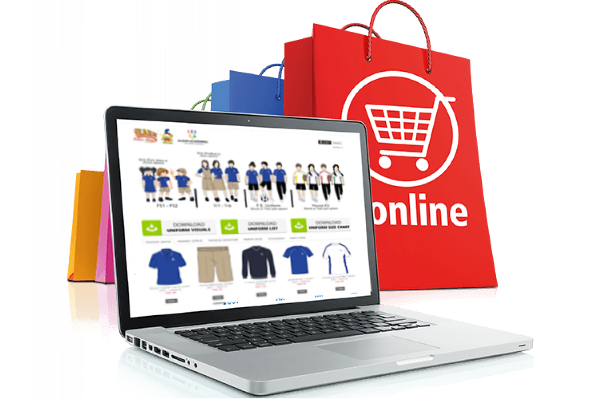

Онлайн-магазины для творческих людей
Здесь вы найдете информацию об онлайн-магазинах, которые помогут вам продавать свои товары в интернете.
О онлайн-магазинах

Продажа товаров (физического продукта творчества в том числе) в интернете — это процесс продажи товаров через онлайн-платформы, включая веб-сайты электронной коммерции, социальные медиа, рынки и интернет-аукционы. Это дает возможность креативным предпринимателям продавать свои уникальные товары напрямую потребителям без привязки к традиционным магазинам.
Плюсы:
- Глобальная аудитория: Продажа товаров в интернете позволяет достичь аудитории по всему миру, что расширяет потенциальный рынок для продуктов и увеличивает шансы на успех.
- Низкие затраты: Запуск онлайн-магазина или использование платформ электронной коммерции может быть гораздо более экономически выгодным, чем аренда физического магазина и связанные с ним расходы.
- Доступность 24/7: Интернет-магазины доступны для покупателей круглосуточно, что означает, что продажи могут происходить даже во времена, когда обычные магазины закрыты.
- Персонализация: Онлайн-платформы позволяют предпринимателям персонализировать свой бренд и взаимодействовать с клиентами более непосредственно через контент, рекламу и сообщения.
- Управление запасами: Использование специализированных программного обеспечения для управления запасами позволяет легко отслеживать товары и предотвращать нехватку или избыток товаров на складе.
Минусы:
- Конкуренция: Интернет-рынок насыщен конкуренцией, что может затруднить выделение своего товара среди других аналогичных предложений.
- Доставка и логистика: Организация доставки товаров может быть сложной и требовать значительных усилий и ресурсов, особенно при международных заказах.
- Безопасность данных: С увеличением онлайн-покупок возрастает риск нарушения безопасности данных клиентов, что требует внимательного обращения и инвестиций в кибербезопасность.
- Необходимость маркетинга: Продажа в интернете требует активного маркетинга для привлечения внимания к продукту среди множества других предложений.
- Возврат товаров: Возможность возврата товаров и возврат средств является неотъемлемой частью интернет-торговли и может создавать дополнительные сложности и расходы для предпринимателя.
Лучшие платформы для онлайн-магазинов
Wildberries

Wildberries - это крупнейший онлайн-ритейлер в России, предлагающий широкий ассортимент одежды, электроники, книг и других товаров.
Плюсы:
- Большая клиентская база.
- Маркетинговые инструменты для продвижения товаров.
- Аналитические данные для оптимизации продаж.
Минусы:
- Высокая конкуренция среди продавцов.
- Комиссии и сборы за продажу и доставку товаров.
- Строгие требования к качеству и возврату товаров.
Ozon

Ozon - один из ведущих онлайн-магазинов в России, предлагающий разнообразие товаров от бытовой техники до продуктов питания.
Плюсы:
- Разнообразные логистические опции.
- Поддержка продавцов через персональных менеджеров.
- Возможность использования Ozon как рекламной площадки.
Минусы:
- Комиссия за продажу может быть выше, чем на других платформах.
- Сложности с управлением запасами из-за большого объема заказов.
- Требования к упаковке и брендингу могут быть обременительными.
Яндекс.Маркет

Яндекс.Маркет позволяет продавцам сравнивать цены и предлагать свои товары в рамках большой экосистемы Яндекса.
Плюсы:
- Доступ к широкой аудитории через экосистему Яндекса.
- Гибкие настройки рекламных кампаний.
- Интеграция с другими сервисами Яндекса.
Минусы:
- Зависимость от отзывов покупателей, которые могут влиять на рейтинг.
- Конкуренция с другими платформами на Яндекс.Маркет.
- Плата за клики может увеличивать затраты на маркетинг.
Рекомендации для продвижения в сфере Онлайн-магазинов
Рекомендации обязательные к использованию:
Оптимизация продукта:
- Качественные фотографии: Используйте четкие, привлекательные фотографии с разных ракурсов.
- Детальное описание: Включите все характеристики продукта, преимущества, особенности и инструкции по использованию.
- Ключевые слова: Используйте релевантные ключевые слова в заголовке, описании и тегах продукта.
Цены и скидки:
- Конкурентоспособные цены: Исследуйте цены конкурентов и установите адекватные цены.
- Скидки и акции: Проводите акции и предлагайте скидки, чтобы стимулировать продажи.
Социальные сети:
- Активное присутствие: Создайте профили в социальных сетях и регулярно публикуйте контент.
- Реклама: Используйте платную рекламу в социальных сетях, чтобы расширить охват.